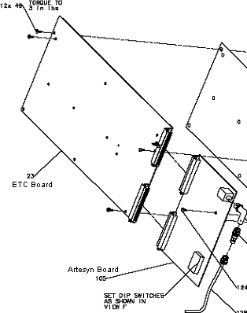
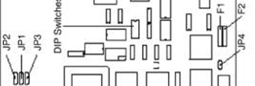

Operating Documentation
Direction 2378260-800, Rev# 10
GOC3 Service Methods (Adv)
Operating Documentation |
| Required Persons | Preliminary Reqs | Procedure | Finalization |
|---|---|---|---|
| 1 |
| Last Revised: | 09 July 2004 |
| Item | Qty | Effectivity | Part# | Manufacturer | |
|---|---|---|---|---|---|
| Phillips #2 Screwdriver | 1 | - | - | - | |
| Flat-blade Screwdriver | 1 | - | - | - | |
| 5/64” Hex Key | 1 | - | - | - | |
| 2mm Metric Hex Key | optional | - | - | - | |
| ESD Wristband | 1 | - | - | - | |
| POTENTIAL FOR SHOCK | |
| VOLTAGE MAY BE PRESENT. | |
| Use proper lockout/tagout procedures before replacing components. See safety menu of Service Document gui for appropriate procedures. |
| NOTE: | It may be necessary to tilt the gantry in order to remove the table base covers. |
Remove table base cover.
| POTENTIAL FOR SHOCK | |
| VOLTAGE MAY BE PRESENT. | |
| Use proper lockout/tagout procedures before replacing components. See safety menu of Service Document gui for appropriate procedures. |
Power down the console. Use proper Lockout/Tagout procedures.
Use a flat-blade screwdriver to loosen the two (2) screws that fasten the cover over the ETC Board.
Use a flat-blade screwdriver to remove the screw on the floor of the table control area that allows the assembly to pivot.
Pivot the assembly.
| Prevent permanent damage to the static-sensitive boards. Attach the anti-static wrist strap to your wrist and to a bare metal grounding point on the table before you continue. | |
Disconnect all connections to the Interface Board.
Use a flat-blade screwdriver to remove 4 copper colored screws that secure Interface Board.
Use a hex key to remove the three (3) screws that fix Interface Board above ETC Board.
Lift off Interface Board.
Disconnect all cables to ETC and Artesyn.
Use a hex key to remove the eight (8) screws that hold the ETC Board. See Illustration 1.
Illustration 1: ETC and Artesyn Board Assembly

Use a hex key to remove the one (1) screw that holds the Artesyn Board.
Remove the existing ETC and Artesyn Boards as one, place on a static mat on cradle and then separate the two boards.
Locate the new ETC and Artesyn Boards.
Remove face plate and discard.
Set/verify ETC Board settings:
S162: Reset
S131 Diagnostic: Set to F. Note this switch is checked during power up but is not used.
Set/verify Artesyn Board settings (DIP switches and jumpers) per Illustration 2, Table 1, and Table 2.
Illustration 2: Artesyn Board DIP Switch and Jumper Locations

Table 1: ETC,STC, & OBC CPU (Artesyn III) Board Jumper Settings
| JUMPER | FUNCTION | GE CONFIGURATION | COMMENTS |
| JP1 | Port A RI/DCD | J1:1-2 | |
| JP2 | Port B RI/DCD | J2:2-3 | |
| JP3 | RS-232 Handshaking | J3:1-2 | |
| JP4 | Watchdog Enable | removed | Watchdog Disable |
Table 2: ETC CPU (Artesyn III) Board DIP Switch Settings
| SWITCH NUM | CONFIGURATION | FUNCTION | COMMENTS | |
| 1 | OFF | Open | ETC node | Selects board for ETC Chassis |
| 2 | OFF | Open | ETC node | Selects board for ETC Chassis |
| 3 | OFF | Open | Primary Nodes | Selects primary nodes |
| 4 | OFF | Open | n/a | Not applicable |
| 5 | ON | Closed | nbs Client view | View logs via nbs Client/LAN |
| 6 | OFF | Open | n/a | Not applicable |
| 7 | ON | Closed | EPROM Boot | Power-Up view EPROM Boot |
| 8 | OFF | Open | Test Disable | Self Test Mode disabled |
Reassemble the new ETC and Artesyn Boards as one.
Return all Table power switches to their "ON" position and check that no wires are damaged or pinched.
Install all removed table covers.
No finalization required.